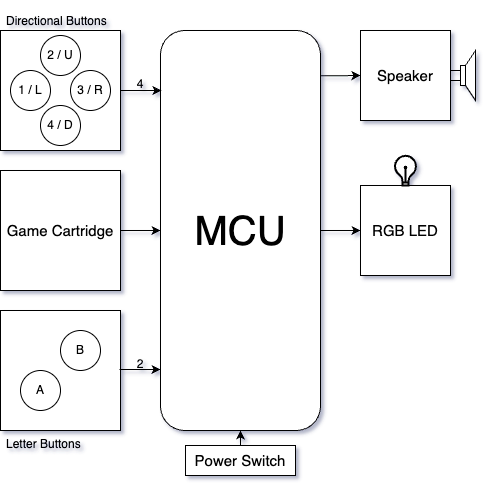
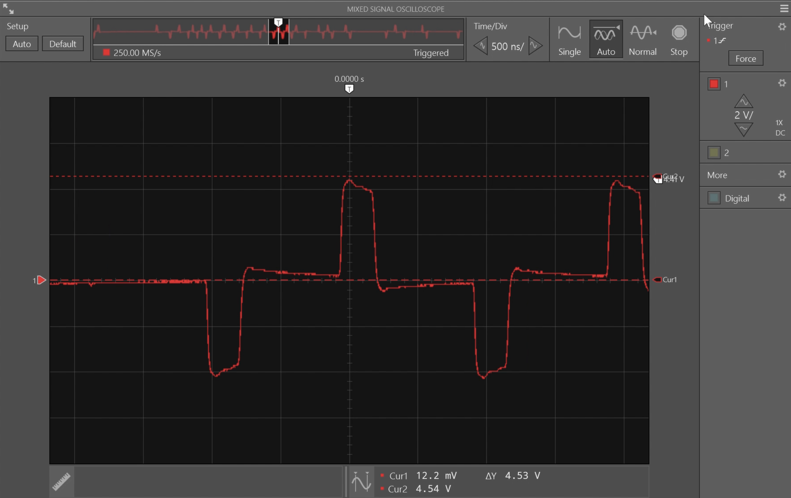
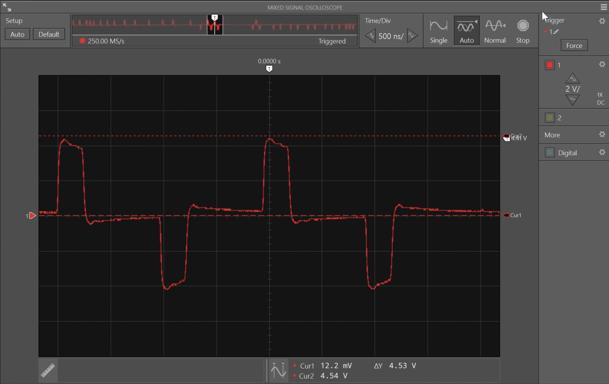
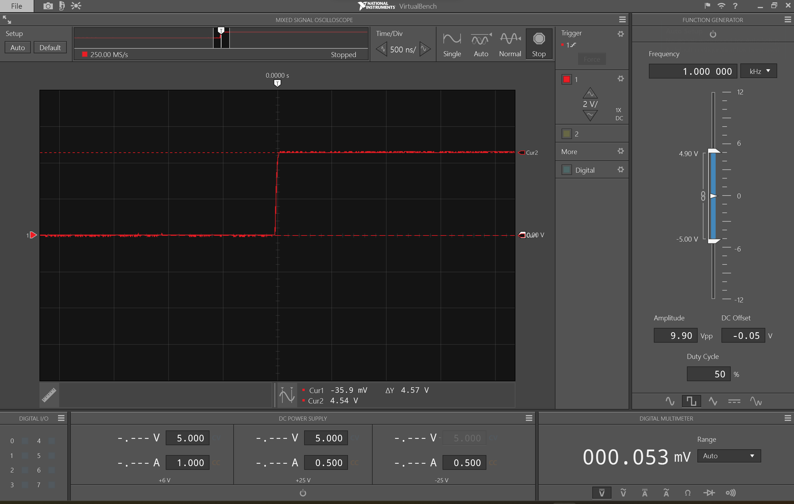
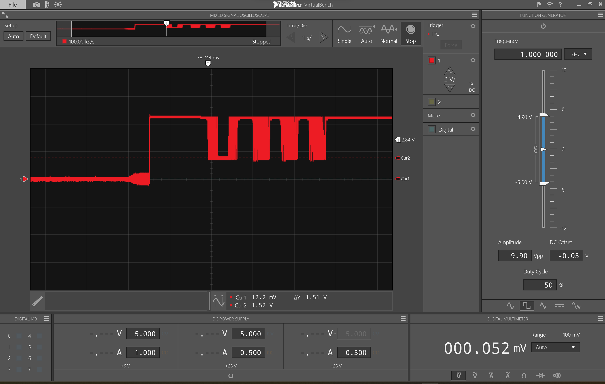

Product Operation

The Fisher-price: Laugh & Learn: Lil' Gamer features 1 power switch, 7 input buttons, and two additional stimulating components. The four buttons circled in blue are referred to in this website as "directional buttons." The two buttons circled in red are referred to in this website as "letter buttons." The one input feature circled in black is referred to as the "game cartridge." The directional and letter buttons are standard face buttons that can be pressed down to cause corresponding speaker and colored LED outputs as described later. Overall, these buttons attempt to teach the user colors, shapes, numbers, and directions. The game cartridge can be pushed downwards towards the screen in order to activate an internal spring switch that causes a song to play.
In addition to the Human Machine Interfacing (HMI) switches available, there are two additional stimulating components to add to the value of this children's toy. The orange lever on the right side that seems to be imitating a power switch offers a loud tactile click whenever it is switched. This is accomplished by an additional thick plastic rod printed on the orange component clipping along the edge of the blue housing it is situated inside. The second stimulating feature is the rail of Tetris pieces on the left that can slide back and forth, making noise and offering motion.
A high-level diagram of the Lil' Gamer with its HMI devices and microcontroller unit (MCU) is below.

The HMI outputs available are limited to a speaker and an LED. The speaker lacks an adjustable volume or simply a mute switch, which is a design flaw that parents may not enjoy. The speaker defaults to a loud volume and is the primary output component because the LED simply flashes in synchronization with the sounds. The speaker will output feedback based on the button pressed, reinforcing learning for the child playing with the Lil' Gamer. When the "3" (or "right") button is pressed, "three" will be said out loud and three noises played in sequence if in the "counting" level, or "right" will be said out loud if in the "directional" level. In order to transition from the "counting" level to the "directional" level, the directional buttons must be pressed in numerical order. This is fully outlined in the operational flow diagrams in the Product Analysis Page, but some operational waveforms are included below.


First, above are waveforms transmitted along the speaker wires. These were measured by placing an oscilloscope probe on test points (TP) 5 and 6 which are available along the same route as the speaker terminals. This route can be seen in the schematic and PCB images on the analysis page. These signals fluctuate between 4.5V and -4.5V, producing what appears to be a raw audio waveform. This output is filtered through an RLC circuit, possibly to protect the speaker and MCU from damage. Below is a waveform produced when any button is pressed. This waveform is measured between ground and the button's output pin (which, for S7 can be tested at TP16).

Finally, below is a waveform produced along the blue pin of the LED when blue is being emitted three times during the "three" stage press of the directional pad. This was measured by using an oscilloscope probe to compare ground to TP9, which is along the rightmost terminal of the multicolor LED. In this image, the 0V portion of the waveform was prior to touching the circuit with the probes, so that measurement does not apply. After the probes connected to the circuit we can see that the LED stays stable at 4.5V and transitions to 1.5V when on, so it is a low-true system.

Template © 2017 uiCookies:Aside.
All Rights Reserved. Designed by uicookies.com